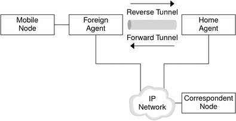
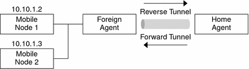
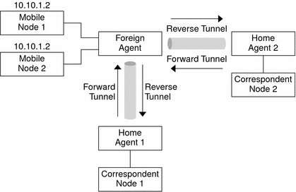
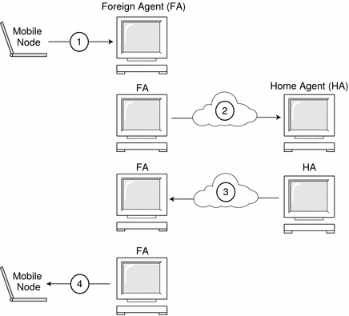

Previous
Previous
Agent Advertisement
Mobile nodes use agent advertisements to determine the current point of attachment to the Internet or to an organization's network. An agent advertisement is an Internet Control Message Protocol (ICMP) router advertisement that has been extended to also carry a mobility agent advertisement extension.
A foreign agent (FA) can be too busy to serve additional mobile nodes. However, a foreign agent must continue to send agent advertisements. Then, the mobile node, which is already registered with a foreign agent, knows that the mobile node has not moved out of range of the foreign agent. The mobile node also knows that the foreign agent has not failed. A mobile node that is registered with a foreign agent from which it no longer receives agent advertisements probably knows that the mobile node can no longer contact that foreign agent.
Agent Advertisement Over Dynamic Interfaces
You can configure the implementation of the foreign agent to send advertisements over dynamically created interfaces. You have options to enable or disable limited unsolicited advertisements over the advertising interfaces. Dynamically created interfaces are defined as only those interfaces that are configured after the mipagent daemon starts. Advertisement over dynamic interfaces is useful for applications that support transient mobility interfaces. Moreover, by limiting unsolicited advertisement, network bandwidth might be saved.
Agent Solicitation
Every mobile node should implement agent solicitation. The mobile node uses the same procedures, defaults, and constants for agent solicitation that are specified for solicitation messages of ICMP routers.
The rate that a mobile node sends solicitations is limited by the mobile node. The mobile node can send three initial solicitations at a maximum rate of one solicitation per second while the mobile node searches for an agent. After the mobile node registers with an agent, the rate that solicitations are sent is reduced to limit the overhead on the local network.
Care-of Addresses
Mobile IP provides the following alternative modes for the acquisition of a care-of address:
A foreign agent provides a foreign agent care-of address, which is advertised to the mobile node through agent advertisement messages. The care-of address is usually the IP address of the foreign agent that sends the advertisements. The foreign agent is the endpoint of the tunnel. When the foreign agent receives datagrams through a tunnel, the foreign agent de-encapsulates the datagrams. Then, the foreign agent delivers the inner datagram to the mobile node. Consequently, many mobile nodes can share the same care-of address. Bandwidth is important on wireless links. Wireless links are good candidates from which foreign agents can provide Mobile IP services to higher bandwidth-wired links.
A mobile node acquires a colocated care-of address as a local IP address through some external means. The mobile node then associates with one of its own network interfaces. The mobile node might acquire the address through DHCP as a temporary address. The address might also be owned by the mobile node as a long-term address. However, the mobile node can only use the address while visiting the subnet to which this care-of address belongs. When using a colocated care-of address, the mobile node serves as the endpoint of the tunnel. The mobile node performs de-encapsulation of the datagrams that are tunneled to the mobile node.
A colocated care-of address enables a mobile node to function without a foreign agent. Consequently, a mobile node can use a colocated care-of address in networks that have not deployed a foreign agent.
If a mobile node is using a colocated care-of address, the mobile node must be located on the link that is identified by the network prefix of the care-of address. Otherwise, datagrams that are destined to the care-of address cannot be delivered.
Mobile IP With Reverse Tunneling
The section How Mobile IP Works assumes that the routing within the Internet is independent of the source address of the datagram. However, intermediate routers might check for a topologically correct source address. If an intermediate router does check, the mobile node needs to set up a reverse tunnel. By setting up a reverse tunnel from the care-of address to the home agent, you ensure a topologically correct source address for the IP data packet. Reverse tunnel support is advertised by foreign agents and home agents. A mobile node can request a reverse tunnel between the foreign agent and the home agent when the mobile node registers. A reverse tunnel is a tunnel that starts at the care-of address of the mobile node and terminates at the home agent. The following figure shows the Mobile IP topology that uses a reverse tunnel.
Figure 27-4 Mobile IP With a Reverse Tunnel
Limited Private Addresses Support
Mobile nodes that have private addresses that are not globally routeable through the Internet require reverse tunnels. Solaris Mobile IP supports mobile nodes that are privately addressed. See Overview of the Solaris Mobile IP Implementation for the functions that Solaris Mobile IP does not support.
Enterprises employ private addresses when external connectivity is not required. Private addresses are not routeable through the Internet. When a mobile node has a private address, the mobile node can only communicate with a correspondent node by having its datagrams reverse-tunneled to its home agent. The home agent then delivers the datagram to the correspondent node in whatever manner the datagram is normally delivered when the mobile node is at home. The following figure shows a network topology with two mobile nodes that are privately addressed. The two mobile nodes use the same care-of address when they are registered to the same foreign agent.
Figure 27-5 Privately Addressed Mobile Nodes Residing on the Same Foreign Network
The care-of address and the home agent address must be globally routeable addresses if these addresses belong to different domains that are connected by a public Internet.
The same foreign network can include two mobile nodes that are privately addressed with the same IP address. However, each mobile node must have a different home agent. Also, each mobile node must be on different advertising subnets of a single foreign agent. The following figure shows a network topology that depicts this situation.
Figure 27-6 Privately Addressed Mobile Nodes Residing on Different Foreign Networks
Mobile IP Registration
Mobile nodes detect when they have moved from one subnet to another subnet through the use of agent advertisements. When the mobile node receives an agent advertisement that indicates that the mobile node has changed locations, the mobile node registers through a foreign agent. Even though the mobile node might have acquired its own colocated care-of address, this feature is provided to enable sites to restrict access to mobility services.
Mobile IP registration provides a flexible mechanism for mobile nodes to communicate the current reachability information to the home agent. The registration process enables mobile nodes to perform the following tasks:
Inform the home agent of the current care-of address
Renew a registration that is about to expire
Request a reverse tunnel
Registration messages exchange information between a mobile node, a foreign agent, and the home agent. Registration creates or modifies a mobility binding at the home agent. Registration associates the home address of the mobile node with the care-of address of the mobile node for the specified lifetime.
The registration process also enables mobile nodes to do the following functions:
Deregister specific care-of addresses while retaining other mobility bindings
Discover the address of a home agent if the mobile node is not configured with this information
Mobile IP defines the following registration processes for a mobile node:
If a mobile node registers a foreign agent care-of address, the mobile node is informing the home agent that it is reachable through that foreign agent.
If a mobile node receives an agent advertisement that requires the mobile node to register through a foreign agent, the mobile node can still attempt to obtain a colocated care-of address. The mobile node can also register with that foreign agent or any other foreign agent on that link.
If a mobile node uses a colocated care-of address, the mobile node registers directly with the home agent.
If a mobile node returns to the home network, the mobile node deregisters with the home agent.
These registration processes involve the exchange of registration requests and registration reply messages. When the mobile node registers by using a foreign agent, the registration process takes the following steps, which the subsequent figure shows:
The mobile node sends a registration request to the prospective foreign agent to begin the registration process.
The foreign agent processes the registration request and then relays the request to the home agent.
The home agent sends a registration reply to the foreign agent to grant or deny the request.
The foreign agent processes the registration reply and then relays the reply to the mobile node to inform the mobile node of the disposition of the request.
Figure 27-7 Mobile IP Registration Process
When the mobile node registers directly with the home agent, the registration process requires only the following steps:
The mobile node sends a registration request to the home agent.
The home agent sends a registration reply to the mobile node that grants or denies the request.
Also, either the foreign agent or the home agent might require a reverse tunnel. If the foreign agent supports reverse tunneling, the mobile node uses the registration process to request a reverse tunnel. The mobile node sets the reverse tunnel flag in the registration request to request a reverse tunnel.